图文讲解23 节
01工业革命：伯明翰
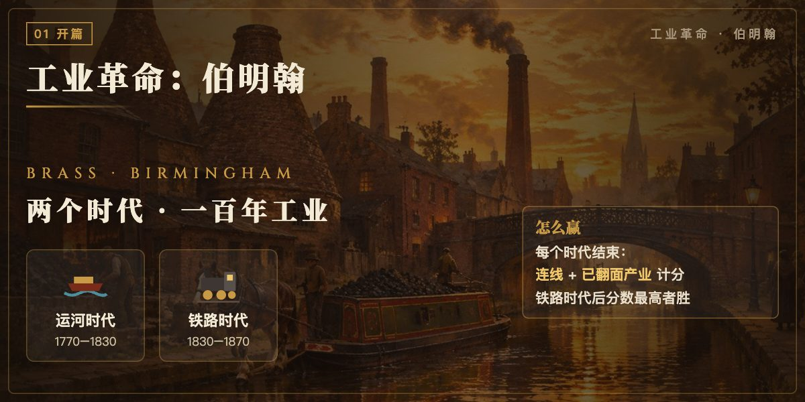
- 1770 到 1870 年，英格兰西米德兰兹。你是伯明翰一带的实业家：开棉纺厂、煤矿、铁厂、制造厂、陶瓷厂和酿酒厂，修运河、铺铁路。
- 游戏分运河时代和铁路时代两个时代。每个时代结束时，连线和已翻面的产业板块计分；铁路时代计分后，分数最高者获胜。
02摆放版图
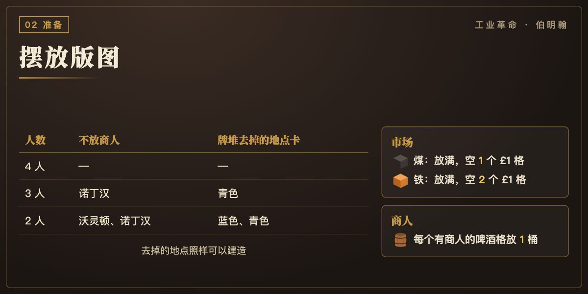
- 版图有白天、黑夜两面，任选一面，规则相同。
- 不满 4 人时，把右下角人数图标多于本局人数的卡牌、顶部人数图标多于本局人数的商人板块放回盒子。
- 结果：2 人局沃灵顿和诺丁汉不放商人，3 人局诺丁汉不放商人。2 人局蓝色、青色地点卡不在牌堆里，3 人局青色地点卡不在牌堆里；这些地点照样可以建造。
- 万能地点卡和万能产业卡分开，正面朝上各放一堆；其余卡洗成牌堆。
- 剩下的商人板块洗混，正面朝上放到标有本局人数的商人格；每个有商人（非空白）的商人旁的啤酒格各放 1 桶啤酒。
- 煤市场放满，只空出 1 个 1 镑格；铁市场放满，空出两个 1 镑格。其余方块和啤酒是供应区，数量无限。
03个人准备
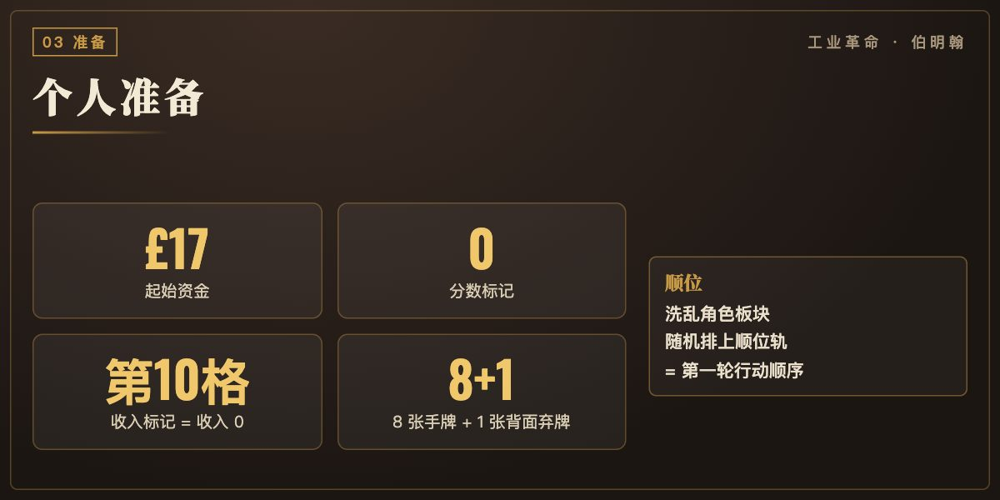
- 每人拿一块玩家板、17 镑，选一个颜色的角色板块，拿同色的连线板块。
- 同色产业板块按格子叠到玩家板上，黑色上半部的一面朝下。
- 分数标记放 0，收入标记放进度轨第 10 格，也就是收入 0。
- 抽 8 张手牌，再抽 1 张背面朝上放在面前，作为弃牌堆的第一张。
- 所有人准备好后，洗乱角色板块，随机排上顺位轨，就是第一轮的行动顺序。
04时代与轮数
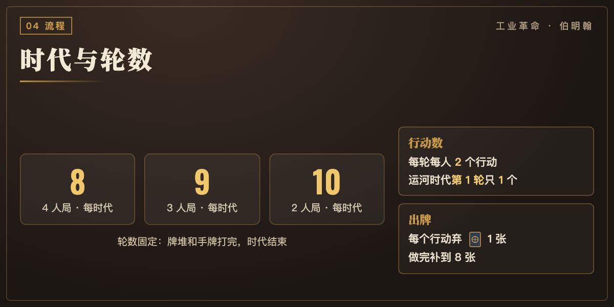
- 每个时代的轮数固定：4 人局 8 轮，3 人局 9 轮，2 人局 10 轮。
- 每轮按顺位，每人执行 2 个行动，可以是同一种。唯一例外：运河时代第一轮，每人只执行 1 个行动。
- 每个行动都要弃 1 张手牌，正面朝上放到自己的弃牌堆；万能卡用完放回它的那一堆。
- 行动做完补牌到 8 张。牌堆抽完后不再补，手牌越打越少；所有人打出最后的手牌的那一轮结束，时代结束。
05花钱与顺位
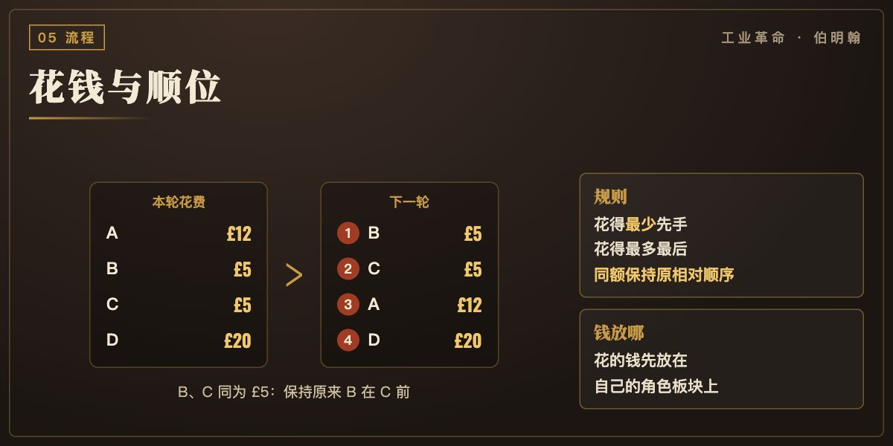
- 回合中花的每一笔钱，都放到自己顺位轨上的角色板块上，不直接交银行。
- 轮末第一步：按本轮花钱从少到多重新排顺位。花得最少的下一轮先行动，花得最多的最后行动；花费相同的玩家保持原来的相对顺序。
- 排好后，把角色板块上的钱都还给银行。
06收入
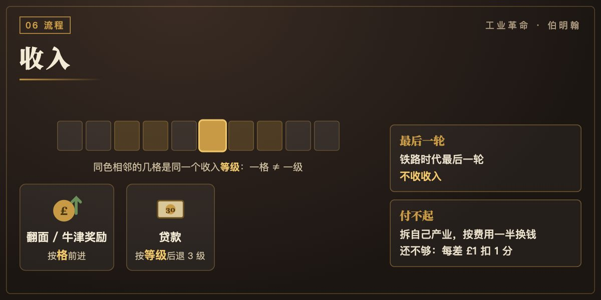
- 轮末第二步：收入。收入标记旁硬币上的数字是收入等级，正数从银行拿钱，负数付钱给银行。
- 全局最后一轮（铁路时代最后一轮）结束后不收收入；运河时代最后一轮照常收。
- 付不起负收入：拆掉自己版图上的产业板块换钱，每块值建造费用的一半（向下取整），够了就停，多的钱归你。拆掉的板块移出游戏。
- 连拆板块也凑不够，每差 1 镑扣 1 分（能扣才扣）。
- 产业板块翻面时，收入标记按「格」前进板块右下角的数字，不是按等级；收入等级最高 30。
07七种选择
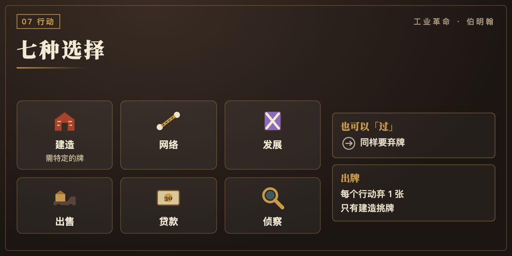
- 六种行动：建造、网络、发展、出售、贷款、侦察。
- 也可以「过」，但每过一个行动同样要弃 1 张牌。
- 只有建造需要特定的牌，其他行动弃任意一张都行。
08网络与连通
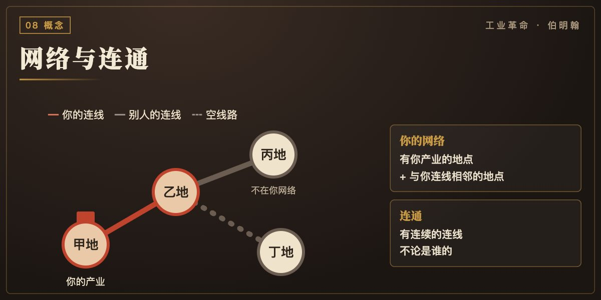
- 你的网络：有你产业板块的地点，加上与你的连线板块相邻的地点。
- 两个地点之间有连续的连线板块（不论谁的），就算「连通」。
- 用地点牌或万能地点卡建造，可以不在你的网络内；用产业牌必须在你的网络内。
09消耗煤
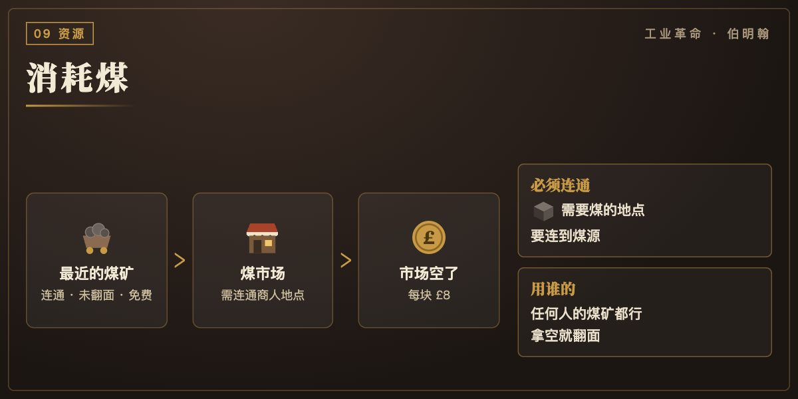
- 建铁路连线和部分产业要煤。消耗煤时，需要的地点必须与煤源连通（放好板块后再看）。
- 首先：从最近的（相隔连线最少）、连通的、未翻面的煤矿免费拿，不论是谁的；一样近就自选；拿空了再找下一个最近的。
- 连不到任何未翻面煤矿时，从煤市场从便宜到贵购买，这需要连通到任一商人地点（沃灵顿、什鲁斯伯里、诺丁汉、格洛斯特、牛津）。市场空了照样能买，每块 8 镑。
10消耗铁
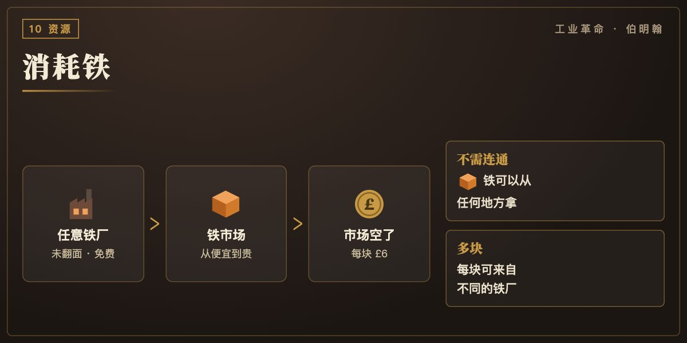
- 发展行动和部分产业要铁。铁不需要连通。
- 首先：从任意未翻面的铁厂免费拿，不必最近，每块可以来自不同铁厂，不论是谁的。
- 版图上没有未翻面铁厂时，从铁市场从便宜到贵购买；市场空了每块 6 镑。
11消耗啤酒
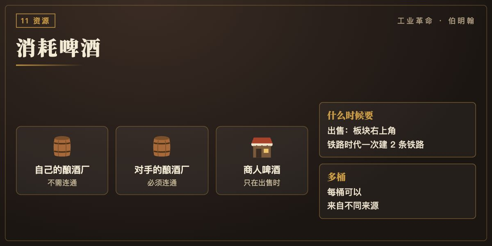
- 出售棉、制成品、陶瓷时通常要啤酒，数量印在产业板块右上角；铁路时代一次网络行动建两条铁路也要 1 桶。
- 来源一：你自己未翻面的酿酒厂，不需要连通。
- 来源二：对手未翻面的酿酒厂，必须与需要啤酒的地点连通。
- 来源三：你正在出售给的那个商人旁边的啤酒，只能在出售时用。
- 需要多桶时，每桶可以来自不同来源。
12建造：出牌与选格
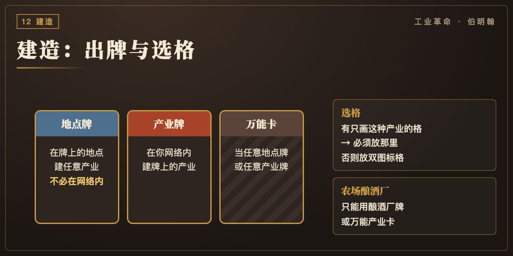
- 第一步，弃一张合适的牌：地点牌或万能地点卡，可在该地点建任意产业，不必在网络内；产业牌或万能产业卡，在你网络内的地点建牌上画的产业。
- 版图上还没有你任何产业或连线时，可以用产业牌在任意有该产业空格的地点建造。
- 第二步，从玩家板拿该产业等级最低的那块，黑色上半部朝下放到空格：能放只画这种产业的格就必须放那里，否则放画着它和另一种产业的格；都没有就不能在这里建。
- 两个农场酿酒厂（无名地点）只能用酿酒厂产业牌或万能产业卡建造；万能地点卡不行。
13建造：时代限制
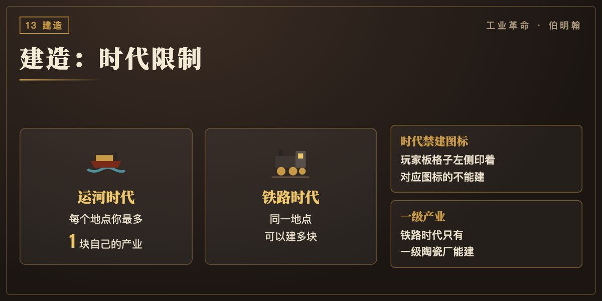
- 运河时代：每个地点你最多 1 块自己的产业板块，可以和别人的在同一地点。玩家板上格子左侧印着运河时代禁建图标（半边涂黑的圆）的板块不能建。
- 铁路时代：同一地点可以建多块。玩家板上格子左侧印着铁路时代禁建图标的板块不能建，要用发展行动拿掉。
- 一级产业里只有一级陶瓷厂可以在铁路时代建造。
14建造：付费与产出
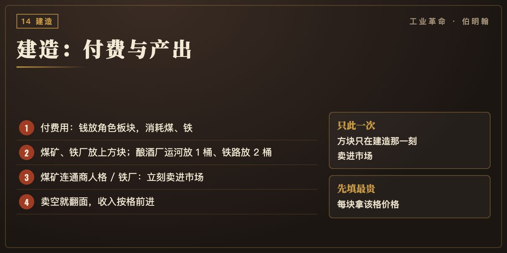
- 第三步，支付玩家板上该格左侧的费用：钱放到角色板块上，消耗需要的煤和铁。
- 第四步，建好煤矿或铁厂：从供应区放上右下角数量的煤或铁；建好酿酒厂：运河时代放 1 桶啤酒，铁路时代放 2 桶。
- 煤矿与任一商人格连通（没放商人板块的也算），或者建的是铁厂（不论是否连通），立刻把尽量多的方块卖进对应市场，先填最贵的格，每块拿该格价格。
- 卖空了就翻面，收入按格前进。方块只在建造这一刻卖进市场，以后不会再卖。
15覆盖建造
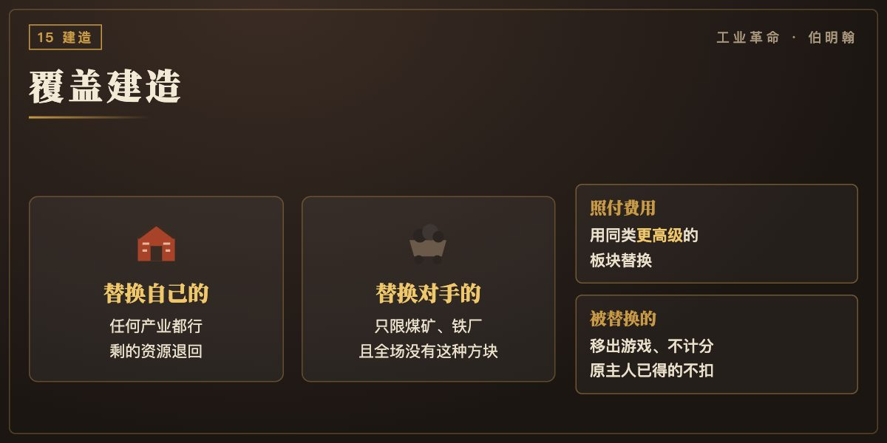
- 可以用同类更高级的板块替换已建好的板块，照常付建造费用。
- 替换自己的：任何产业都可以；板块上剩下的煤、铁、啤酒退回供应区。
- 替换对手的：只能是煤矿或铁厂，而且整个版图（包括市场）上已没有这种方块。
- 被替换的板块移出游戏，不计分；原主人已得的收入和分数不扣。
16网络行动
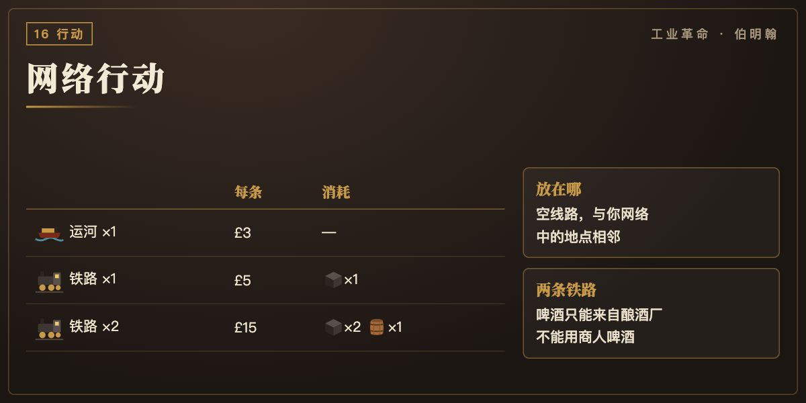
- 弃一张牌，把连线板块放到空的线路上，必须与你网络中的地点相邻。版图上还没有你任何板块时，可以放在任意空线路上。
- 运河时代：只能建运河，1 条 3 镑。
- 铁路时代：只能建铁路，1 条 5 镑并消耗 1 煤；或者一次建 2 条，共 15 镑，每条各消耗 1 煤，再消耗 1 桶来自酿酒厂（不能用商人啤酒）的啤酒。每条逐一放置，各自要连通煤源。
- 坎诺克到它左边的农场酿酒厂要一条连线；基德明斯特—伍斯特的那条连线同时连接左边的农场酿酒厂，不需要也不能再放第二条。
17出售行动
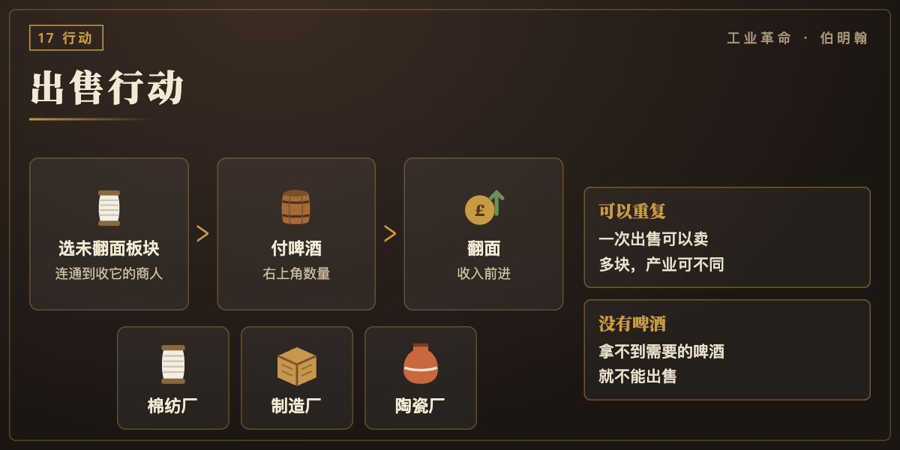
- 弃一张牌，选一块你未翻面的棉纺厂、制造厂或陶瓷厂，它必须连通到一个画着该产业图标的商人。
- 消耗板块右上角数量的啤酒。如果卖给的那个商人旁边还有啤酒，可以用它，并拿该商人的啤酒奖励。
- 板块翻面，收入按右下角数字前进格数。然后可以对你其他未翻面的板块重复，产业可以不同。
- 需要的啤酒拿不到，就不能出售。
18商人啤酒奖励
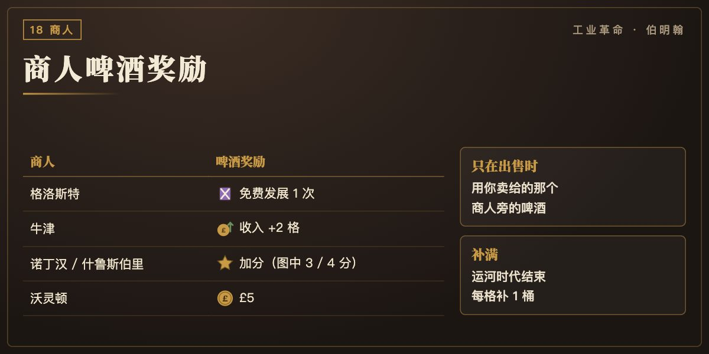
- 格洛斯特：发展，免费拿掉玩家板上任一产业等级最低的一块（不用铁），印灯泡的陶瓷厂除外。
- 牛津：收入前进 2 格。
- 诺丁汉、什鲁斯伯里：加分，数值印在该商人旁（规则书图中诺丁汉 3 分、什鲁斯伯里 4 分）。
- 沃灵顿：从银行拿 5 镑。
- 商人啤酒只能在出售时用，运河时代结束时补满。
19发展、贷款、侦察
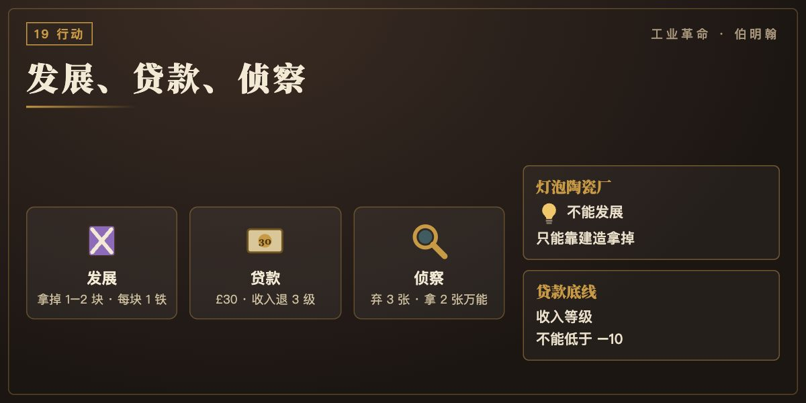
- 发展：弃一张牌，从玩家板拿掉 1 到 2 块板块放回盒子，可以是不同产业，但每块都必须是该产业当前等级最低的；每块消耗 1 铁。印灯泡的陶瓷厂不能发展，只能靠建造拿掉。
- 贷款：弃一张牌，拿 30 镑，收入标记后退 3 个等级（不是格），放在新等级的最高一格。贷款永不偿还；会让收入等级低于 -10 时不能贷。
- 侦察：弃三张牌（行动本身那张加另外 2 张），拿 1 张万能地点卡和 1 张万能产业卡。手里已经有万能卡时不能侦察。
20翻面
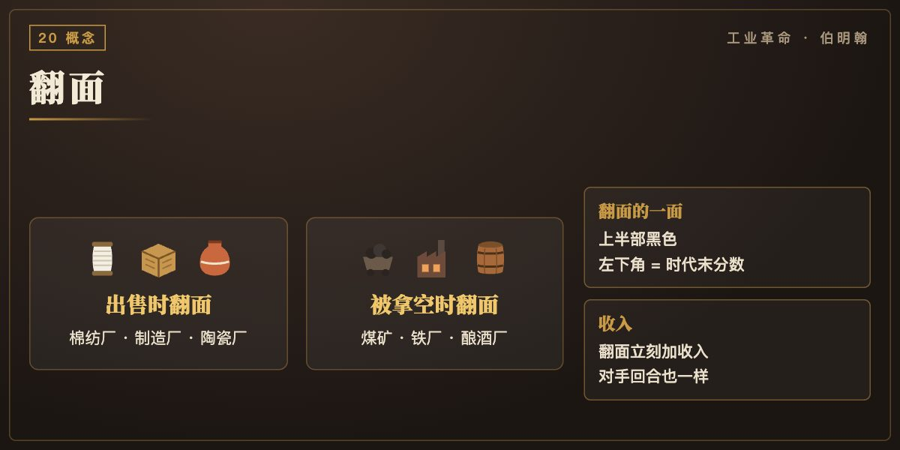
- 棉纺厂、制造厂、陶瓷厂：出售时翻面。
- 煤矿、铁厂、酿酒厂：最后一个方块或啤酒被拿走时翻面，常常发生在对手的回合，主人照样加收入。
- 翻面的一面上半部是黑色，左下角是时代末的分数。
21时代结束
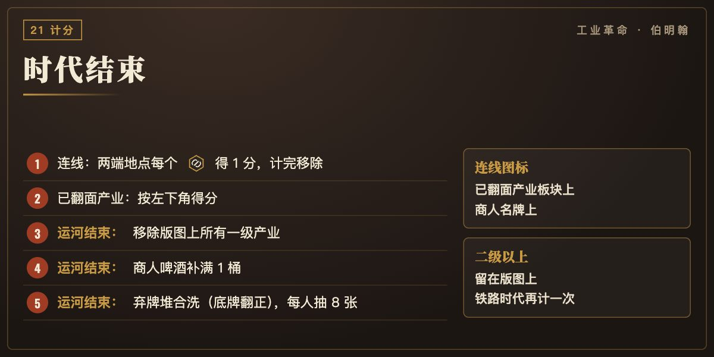
- 一、连线计分：你的每块连线板块，两端地点上显示的每个连线图标得 1 分（已翻面产业板块和商人名牌上都有）；计完就从版图上移除。
- 二、所有人移除连线后，每块已翻面的产业板块按左下角得分；未翻面的不得分。
- 运河时代结束还要：三、移除版图上所有一级产业板块（玩家板上的不动）；二级及以上留在版图上，铁路时代末还会再计一次分。
- 四、每个有商人的啤酒格补满 1 桶。五、收集所有弃牌堆，把每堆最底下那张翻成正面，洗成新牌堆。六、每人抽 8 张。
22胜利
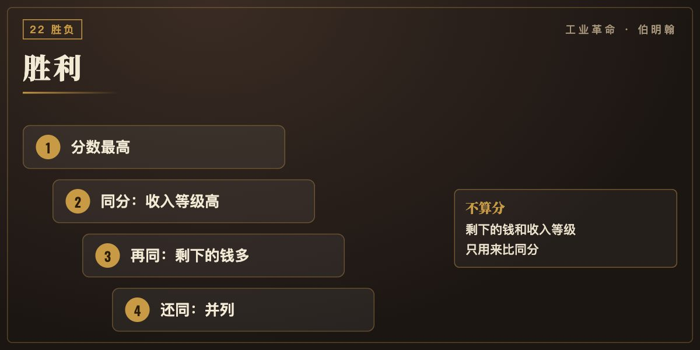
- 铁路时代计分后，分数最高者获胜。
- 同分先比收入等级高，再比剩下的钱多；还相同就并列。
- 收入等级和剩下的钱本身不算分。
23新手提示
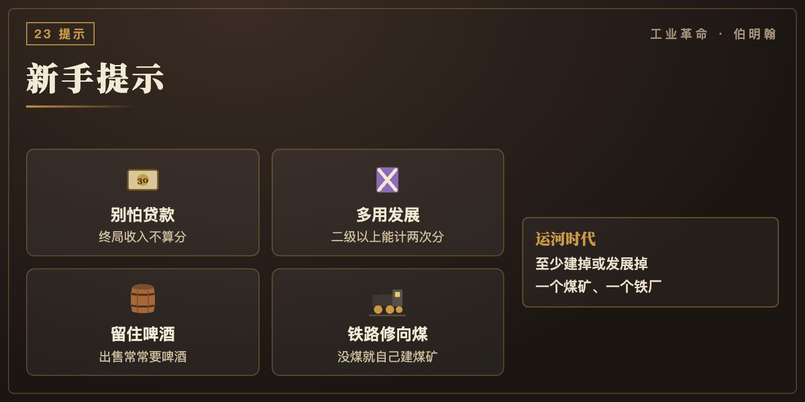
- 别怕贷款：终局收入等级不算分，低收入照样能赢。
- 二级以上的产业运河时代建好不会被移除，两个时代都能计分，发展行动很有用。
- 发展酿酒厂要小心：出售常常需要啤酒，没有自己的啤酒很被动。
- 一级板块（一级陶瓷厂除外）铁路时代不能建，留在玩家板上会挡住更高级的板块，尽量在运河时代把至少一个煤矿和一个铁厂建掉或发展掉。
- 铁路时代开局不知道怎么扩张时，就把铁路修向煤源；没有煤就自己建煤矿。
常见问题35 条
以下依据 Roxley 官方规则书 v2018.11 整理，并非官方 FAQ，点开查看答案。
顺位与轮数
下一轮的顺位怎么决定？花费相同怎么办？
每轮结束时，按本轮花的钱从少到多重新排列顺位轨上的角色板块：花得最少的下一轮先行动，花得最多的最后行动；花费相同的玩家保持原来的相对顺序。行动中花的钱都先放在自己的角色板块上，排完顺位再还给银行。 来源：规则书
每个时代有几轮？
轮数随人数固定：4 人局每个时代 8 轮，3 人局 9 轮，2 人局 10 轮。时代在所有玩家打出最后的手牌的那一轮结束。 来源：规则书
第一轮有什么特别？
运河时代第一轮，每人只执行 1 个行动；之后每轮每人 2 个行动，可以重复同一种。第一轮的顺位是开局时随机排的。 来源：规则书
铁路时代第一轮谁先手？
规则书没有为铁路时代另定顺位：运河时代最后一轮结束时照常按花费排顺位，这个顺序就是铁路时代第一轮的顺序。铁路时代第一轮每人照常执行 2 个行动。 来源：规则书
每个行动都要弃牌吗？「过」也要吗？
要。每个行动都要弃 1 张手牌（侦察要弃 3 张），选择「过」也要为每个跳过的行动弃 1 张。万能卡用完放回它的那一堆，不进弃牌堆。 来源：规则书
收入与贷款
收入「等级」和「格」有什么区别？
进度轨上收入标记旁硬币的数字是收入等级，每轮按等级拿钱或付钱。产业翻面、牛津商人奖励让收入按「格」前进，一次前进几格可能只升一两级；贷款按「等级」后退 3 级，标记放在新等级的最高一格。 来源：规则书
每轮都收收入吗？
每轮结束、排完顺位后收收入；唯一例外是全局最后一轮（铁路时代最后一轮）结束后不收。运河时代最后一轮照常收。 来源：规则书
贷款行动怎么做？有限制吗？
弃 1 张任意牌，从银行拿 30 镑，收入标记后退 3 个收入等级（不是 3 格），放在新等级的最高一格。贷款永不偿还。如果贷款会让收入等级低于 -10，就不能贷款。 来源：规则书
付不起负收入会怎样？
必须从版图上拆掉自己的产业板块（不能拆连线）换钱，每块值它建造费用的一半，向下取整；凑够就停，多出的钱归你，拆掉的板块移出游戏。连拆板块也凑不够，每差 1 镑扣 1 分（有分才扣）。 来源：规则书
收入能一直往上涨吗？
不能，收入等级最高 30。 来源：规则书
建造
地点牌、产业牌、万能卡分别怎么用？
地点牌或万能地点卡：在牌上的地点建任意可建的产业，不必在你的网络内。产业牌或万能产业卡：在你网络内的地点建牌上画的产业。只有建造需要特定的牌，其他行动弃任意牌都行。 来源：规则书
版图上还没有我的板块，怎么开局建造？
版图上没有你任何产业或连线板块时，可以用产业牌在任意有该产业空格的地点建造；也可以用任意一张牌做网络行动，把连线放在任意空线路上（建铁路仍要消耗煤）。 来源：规则书
一个地点有几个空格，建在哪一格？
有只画着这种产业图标的空格，就必须建在那里；没有才建在画着该产业和另一种产业的格；都没有就不能在这个地点建（覆盖建造除外）。拿的永远是玩家板上该产业等级最低的板块。 来源：规则书
运河时代和铁路时代建造有什么不同？
运河时代每个地点你最多只能有 1 块自己的产业板块（可以和别人的在同一地点）；铁路时代没有这个限制。玩家板上格子左侧印着时代禁建图标的板块，在对应时代不能建；一级产业里只有一级陶瓷厂能在铁路时代建造。 来源：规则书
建好煤矿、铁厂，方块什么时候卖进市场？
只在建造的那一刻：煤矿连通到任一商人格（没放商人板块的也算），或者建的是铁厂（不需要连通），就立刻把尽量多的方块卖进对应市场，先填最贵的格，每块拿该格价格。卖空就翻面加收入。之后不会再卖进市场。 来源：规则书
能覆盖建造吗？
可以用同类更高级的板块替换已建好的板块，照常付费用。自己的产业都能替换，上面剩的资源退回供应区；对手的只能替换煤矿或铁厂，并且整个版图（包括市场）上已经没有这种方块。被替换的板块移出游戏、不计分，原主人已得的收入和分数不扣。 来源：规则书
农场酿酒厂怎么建？
两个无名地点各有一个酿酒厂空格，只能用酿酒厂产业牌或万能产业卡建造，万能地点卡不行。坎诺克到它左边的农场酿酒厂需要一条连线；基德明斯特—伍斯特那条连线同时连接左边的农场酿酒厂，不需要也不能再放第二条。 来源：规则书
网络
网络行动建一条连线要多少钱？
运河时代只能建运河：1 条 3 镑。铁路时代只能建铁路：1 条 5 镑并消耗 1 煤；或者一次建 2 条，共 15 镑，每条消耗 1 煤，另外消耗 1 桶来自酿酒厂的啤酒（不能用商人啤酒）。 来源：规则书
连线可以放在哪里？
放在空的、属于当前时代的线路上（运河时代放运河线，铁路时代放铁路线），而且要与你网络中的地点相邻。你的网络是：有你产业板块的地点，加上与你的连线相邻的地点。 来源：规则书
资源
煤从哪里拿？一定要连通吗？
要。先从最近的（相隔连线最少）、连通的、未翻面的煤矿免费拿，不论是谁的。连不到任何煤矿时，才从煤市场从便宜到贵购买，而且要连通到任一商人地点；市场空了每块 8 镑。 来源：规则书
铁从哪里拿？要连通吗？
不需要连通。先从任意未翻面的铁厂免费拿，不必最近，不论是谁的；版图上没有未翻面的铁厂时，从铁市场从便宜到贵购买，市场空了每块 6 镑。 来源：规则书
用对手的煤、铁、啤酒要给钱吗？
不用，从任何人未翻面的产业板块拿资源都是免费的。板块被拿空就翻面，主人加收入。 来源：规则书
出售与啤酒
出售行动怎么做？
弃 1 张牌，选一块你未翻面的棉纺厂、制造厂或陶瓷厂，它必须连通到画着该产业图标的商人；消耗板块右上角数量的啤酒，然后翻面、收入按右下角数字前进格数。可以对你其他未翻面的板块重复，产业可以不同。 来源：规则书
啤酒从哪里来？要连通吗？
三个来源：你自己未翻面的酿酒厂，不需要连通；对手未翻面的酿酒厂，必须与需要啤酒的地点连通；你正在出售给的那个商人旁边的啤酒（只能出售时用）。需要多桶时每桶可以来自不同来源。 来源：规则书
商人啤酒奖励有哪些？
出售时用掉商人旁的啤酒就拿该商人的奖励：格洛斯特免费发展 1 次（不用铁，印灯泡的陶瓷厂除外）；牛津收入前进 2 格；诺丁汉、什鲁斯伯里加分（规则书图中分别为 3 分、4 分）；沃灵顿拿 5 镑。 来源：规则书
酿酒厂建好放几桶啤酒？
运河时代建的放 1 桶，铁路时代建的放 2 桶。最后一桶被用掉时酿酒厂翻面。 来源：规则书
商人的啤酒用完还会补吗？
时代中不补。运河时代结束时，每个有商人（非空白）的商人旁的啤酒格各补满 1 桶。 来源：规则书
哪些产业靠出售翻面，哪些不是？
棉纺厂、制造厂、陶瓷厂靠出售行动翻面。煤矿、铁厂、酿酒厂在最后一个方块或啤酒被拿走时翻面，常发生在对手的回合，主人照样加收入。 来源：规则书
发展与侦察
发展行动怎么做？
弃 1 张牌，从玩家板拿掉 1 到 2 块板块放回盒子，可以是不同产业，但每块都必须是该产业当前等级最低的；每拿掉一块消耗 1 铁。印着灯泡图标的陶瓷厂不能发展，只能靠建造拿掉。 来源：规则书
侦察行动怎么做？
弃 3 张牌（行动本身那张加另外 2 张），拿 1 张万能地点卡和 1 张万能产业卡。手里已经有万能卡时不能侦察。 来源：规则书
时代结束与胜负
时代结束怎么计分？
一、每块连线板块：两端地点上显示的每个连线图标得 1 分，计完移除。二、每块已翻面的产业板块按左下角得分，未翻面的不得分。两个时代都这样计分。 来源：规则书
运河时代结束后还要做什么？
计分后：移除版图上所有一级产业板块（玩家板上的不动），二级及以上留在版图上；每个有商人的啤酒格补满 1 桶；收集所有弃牌堆，把每堆最底下那张翻成正面，洗成新牌堆；每人抽 8 张。 来源：规则书
二级以上产业会计两次分吗？
会。运河时代结束只移除一级产业板块，二级及以上留在版图上；只要它们是翻面的，铁路时代结束时会再计一次分。 来源：规则书
终局同分怎么判？
铁路时代计分后分数最高者获胜。同分先比收入等级，高者胜；再相同比剩下的钱，多者胜；仍相同则并列。 来源：规则书
终局剩下的钱、收入算分吗？
不算分，只用于同分时比较。所以不必害怕贷款，低收入照样能赢。 来源：规则书